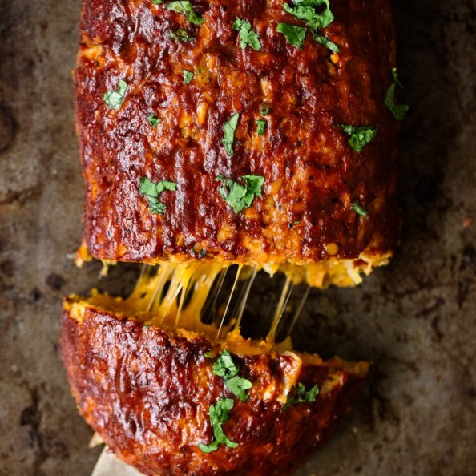

Cheddar-Stuffed Sweet Potato BBQ Turkey Meatloaf

Outrageously delicious sweet potato BBQ turkey meatloaf stuffed with sharp cheddar cheese. This low carb meatloaf is easy to make and bound to become a dinner staple!
Truthfully, this BBQ turkey meatloaf has been a staple in our house for a while. I first made it back in 2017 and since then it’s one of Tony’s most requested dinners, along with my homemade turkey sloppy joes.
One of the reasons we love this recipe so much is because it’s easy, healthy and we always seem to have the ingredients on hand. Likely because I anticipate Tony asking for it.
Ingredients
- 1 teaspoon olive oil
- 1 small sweet potato, shredded (about 3/4 cup shredded sweet potato)
- 1 pound lean ground turkey (94%)
- 1 small white onion, finely diced
- 2 cloves garlic, minced
- 1 egg, slightly beaten
- 1/2 cup italian style panko breadcrumbs (or use gluten free breadcrumbs)
- 2 tablespoons low sugar bbq sauce (I like Stubb’s)
- 1 teaspoon cumin
- 1/2 teaspoon cayenne pepper (if you like heat)
- 1/2 teaspoon fresh cracked black pepper
- 3/4 teaspoon salt
- 2 oz sliced sharp cheddar cheese (or ½ cup shredded cheddar)
Directions
- Preheat oven to 375 degrees F. Line large baking sheet with parchment paper.
- Place a medium skillet over medium heat. Add in olive oil and sweet potato shreds; sauce for about 5 minutes. Set aside to cool for a few minutes.
- In a large bowl combine turkey, onion, sweet potato shreds, garlic, egg, breadcrumbs, 2 tablespoons bbq sauce, spices, and salt and pepper. Use your hands or a large spoon to mix until well combined. I find that it's much easier to combine the ingredients if you use your hands.
- Place half of meat mixture on foil-lined pan and shape into a 10x4 inch rectangle. Top with cheddar evenly, leaving about an 1/2 inch of room on the sides. Top with the remaining meat mixture, enclosing the cheese completely and sealing the sides/edges together.
- Spread half of the bbq sauce on top of the meat loaf, reserve other half for brushing on when meatloaf is finished baking.
- Bake meatloaf for 50 minutes to 1 hour or until meat thermometer reads 160 degrees F. Top with remaining sauce and allow to cool for 5 minutes before cutting into 4 slices. Top with cilantro and serve with sweet potato fries or a side salad.